小さな事業の「現場の仕事」をシステムに
電話とメモで回している仕事を、予約から精算まで一つの仕組みに。
予約の受付、担当の割り振り、当日の作業チェック、売上とスタッフへの支払いまで。建物設備管理の現場で働く代表が、自分の事業で使うつもりで作っています。
画面 3種類（管理・スタッフ・お客様）予定の単位 15分スマホ対応
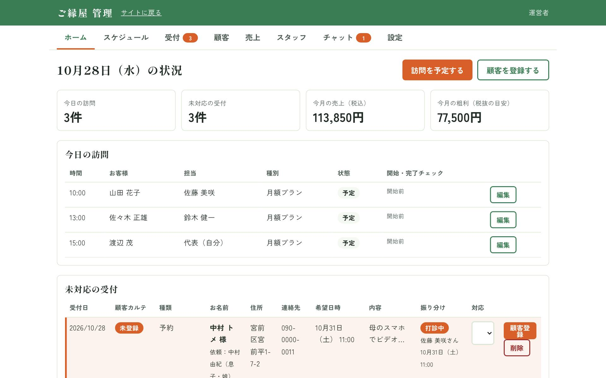
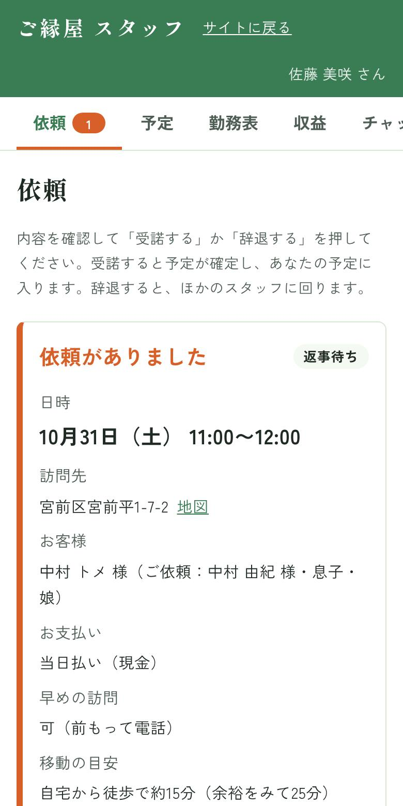
CASE 01 ／ 訪問サービス業
高齢者向け 暮らしのお手伝い「ご縁屋」
川崎市宮前区で、電球の交換やスマホの設定などを1回60分で行う訪問サービスです。代表一人で始め、業務委託のスタッフを増やしていく前提で作りました。
- 課題
- 予約が電話中心で、日程の調整に時間がかかる
- スタッフが増えると誰がいつ空いているか分からない
- お客様の家に入る仕事なので、安全と信頼の記録が要る
- 作ったもの
- 空き時間だけを表示する予約ページ
- 依頼の自動振り分け（近さ・空き・件数の偏り）
- スタッフ用のスマホ画面と開始・完了チェック
- 売上・粗利・スタッフへの振込額の自動計算
- つないだもの
- Googleカレンダー（代表・スタッフ個人）
- チャット（写真・PDFを添付）
- 業務委託契約書・誓約書・接客マニュアル
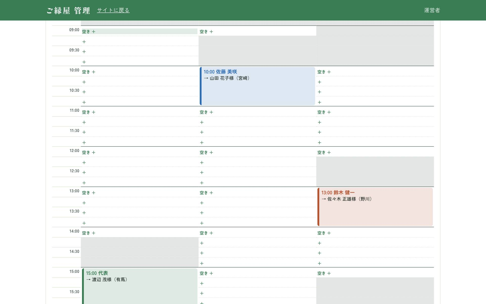
全員の予定を15分単位で一画面に
勤務時間、休み、私用の予定、移動時間を考えて空きを出します。私用の予定は「埋まっている」ことだけを共有し、内容は表示しません。
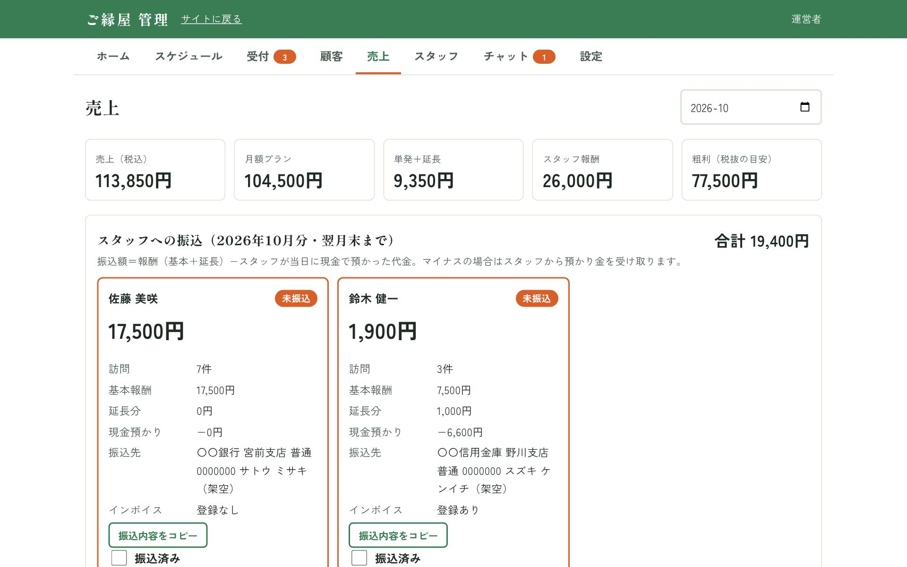
売上と、スタッフへの振込額まで自動で
完了した訪問から報酬を計算し、現金で預かった代金を差し引いた振込額を出します。月額プランの入金確認もここで行います。
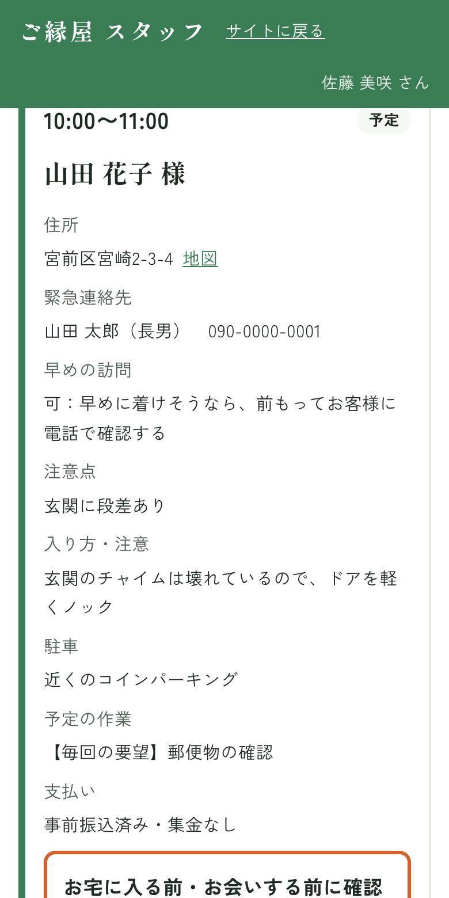
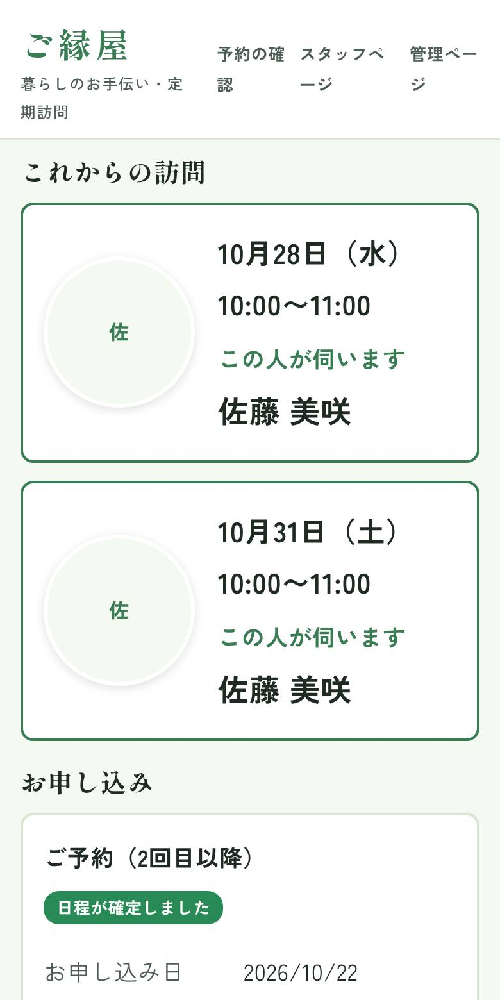
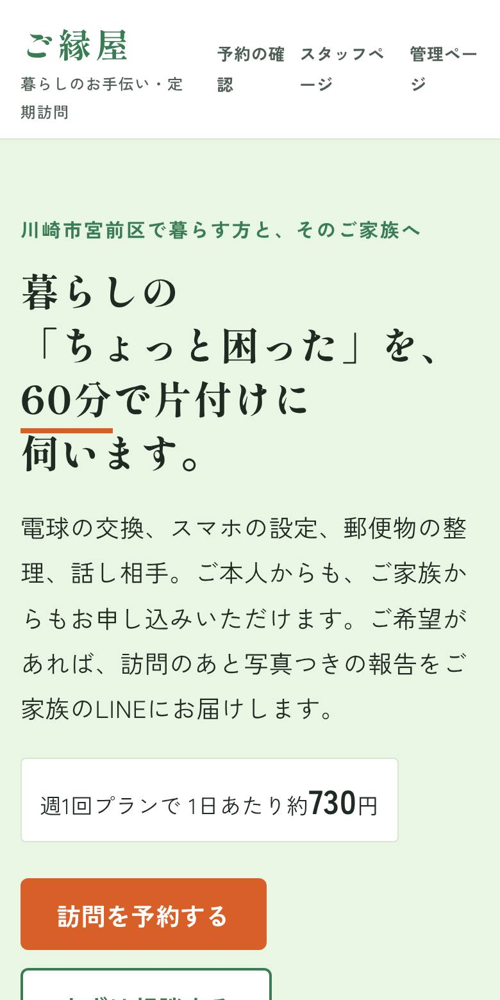
月80件の訪問で、日程調整の電話が1件10分かかる場合
約13時間／月
予約ページと自動振り分けで、この調整時間の多くを減らせる見込みです。実際の運用データではなく、条件をおいた計算です。CASE 02 ／ 建物設備管理業
点検の記録から報告書まで「設備点検報告システム」
代表が本業の貯水槽清掃・増圧ポンプ点検・排水管洗浄で使うために作ったシステムです。現場でスマホに入力すると、自社書式の報告書がPDFでできあがります。
- 課題
- 現場のメモを、事務所で報告書に書き写していた
- 写真の貼り付けと並べ替えに時間がかかる
- 次回点検の時期や、入居者向けのお知らせを手で管理していた
- 作ったもの
- 点検項目を押して選ぶスマホ入力
- 写真を自動で並べた報告書PDF（A4）
- 断水・作業のお知らせPDF（掲示用）
- 部屋ごとの実施結果から実施率を自動集計
- つないだもの
- Googleスプレッドシート（報告書の書式）
- Googleカレンダー（予定・祝日）
- freee（見積書の下書き）
- 次回点検のお知らせメール
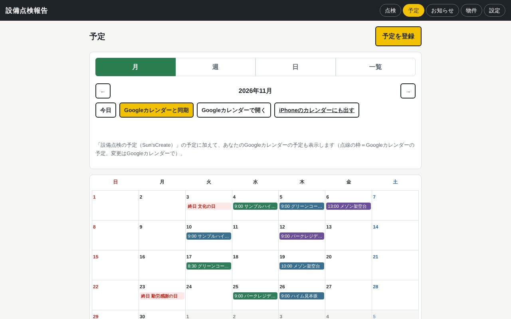
点検の予定をGoogleカレンダーと一つに
システムで登録した予定はGoogleカレンダーにも入り、カレンダー側で動かした予定もこちらに戻ります。普段の予定と祝日も同じ画面で見られます。
入力から書類までを一続きに
現場で項目を「良・要注意・否」で押す → 「否」は改善提案に自動で入る → ボタン一つで報告書PDF → 改善提案から見積書の下書き（外注分は利益を上乗せ） → 次回の点検時期が近づくとメールで知らせる。
報告書の書式は、元のスプレッドシートを差し替えるだけで変えられます。
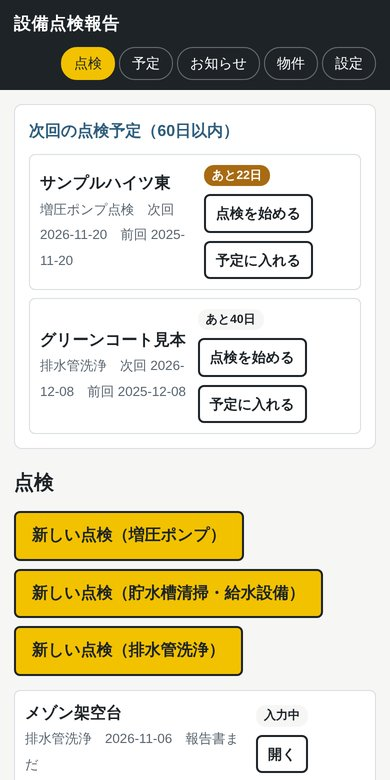
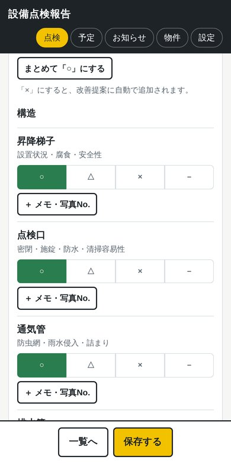
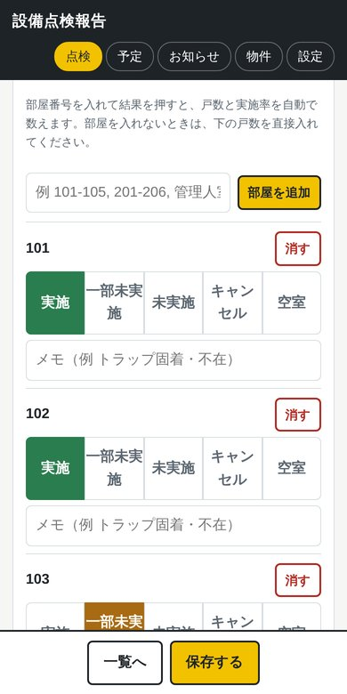
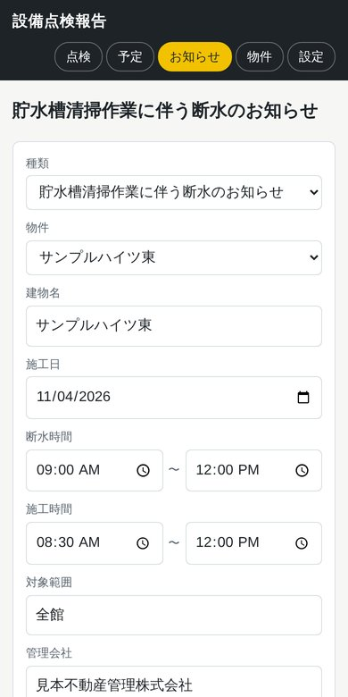
画面の建物名・住所・管理会社はすべて架空です。
CASE 03 ／ 小さなお店（パン屋）
並ばずに受け取れる「事前注文・事前決済」
人気のパン屋のレジ前の行列を減らすために考えた仕組みです。お客様はネットで受け取り時間とパンを選んで先に支払い、お店では受付番号を伝えて受け取るだけ。架空のお店で作ったデモです。
- 課題
- 朝と昼にレジ前へ行列ができ、買わずに帰るお客様がいる
- 電話の取り置きは聞き間違いや受け取り忘れが起きやすい
- 何をいくつ焼けばよいか、予約分が見えない
- 作ったもの
- 15分ごとの受け取り枠（1枠の上限つき）
- 焼き上がり数から残りを出す商品ページ
- 受付番号とQRコードの発行
- 受け渡し・仕込み数・売り切れの管理画面
- 本番でつなぐもの
- 決済サービス（クレジットカード・PayPayなど）
- 注文確認のメール・LINE通知
- Googleカレンダーやレジの売上集計
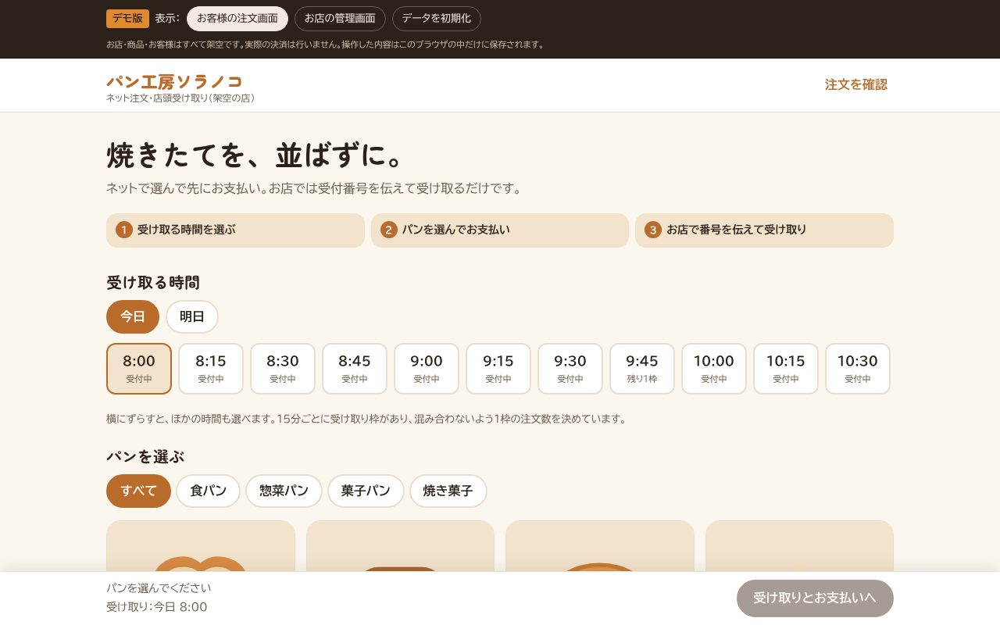
いちばん早い受け取り時間を最初から選択
選ぶ手間を減らすため、注文できるいちばん早い時間を最初から選んでおきます。満員の時間と売り切れのパンは、最初から押せません。
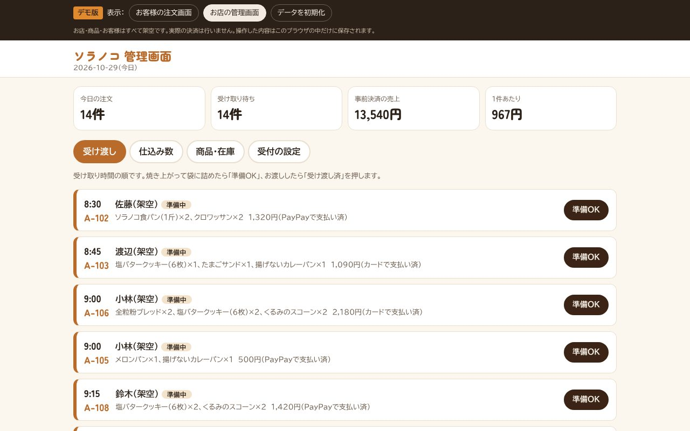
受け取り時間の順に、袋詰めと受け渡し
「準備OK」「受け渡し済」を押すだけ。時間を過ぎた注文には印が付きます。予約分を商品ごとに集計し、焼く数を決める目安にできます。
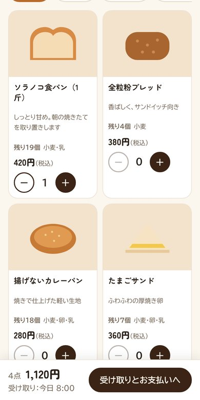
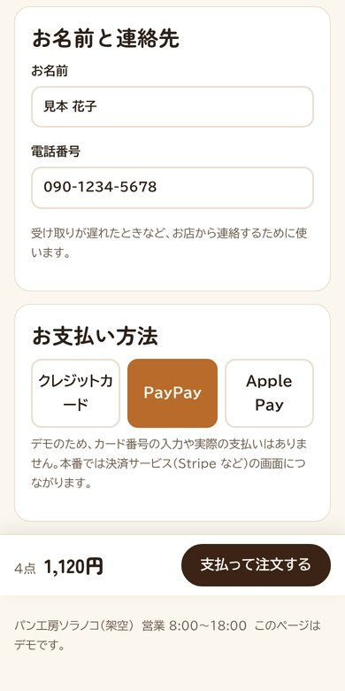
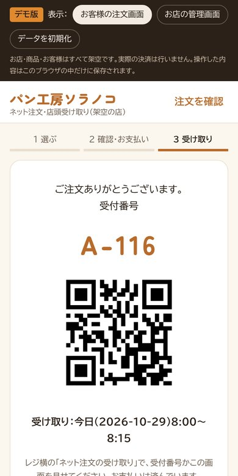
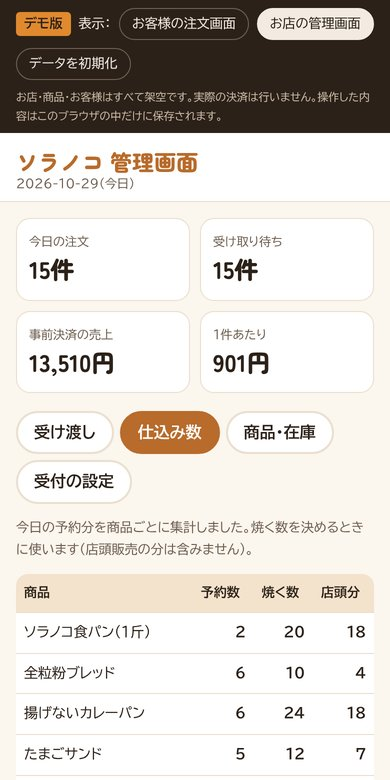
ネット注文が1日40件、レジでの会計が1件あたり1分30秒かかる場合
約60分／日
受け取りだけになれば、この会計の時間の多くがレジから外れる見込みです。実際の運用データではなく、条件をおいた計算です。DESIGN
使う人に合わせた作り込み
画面の見た目より、現場で迷わないこと・間違えないことを優先しています。
年配の方が使える
- 大きな文字と、1段ずつ進む入力
- 電話番号や住所の打ち間違いをその場で知らせる
- 選べない時間は最初から押せない
個人情報を出しすぎない
- 予約の確認は、名前と電話番号を鍵にして暗号化
- カレンダーの予定の中身は表示しない
- 管理・スタッフ画面はパスワードで保護
現場の安全と記録
- 開始前・完了時のチェックを押さないと進めない
- 鍵・火の元・電気の確認、当日精算の記録
- 受付を消すと、予定・売上・カレンダーまで連動して消える
FIELDS
こんな事業に向いています
「人が現場に行く」「予約と担当を割り振る」「作業を記録して請求する」仕事なら、同じ仕組みを合わせて作れます。
訪問・出張サービス
家事代行、清掃、出張修理、介護保険外のサービスなど。予約、担当の割り振り、報酬計算。
点検・清掃・設備の仕事
設備点検、清掃、メンテナンスなど。現場の記録、写真つき報告書、見積書、次回の予定管理。
パン屋・弁当・惣菜など食べ物の店
事前注文と事前決済、受け取り時間の枠、売り切れの表示、予約分の仕込み数の集計。
予約制の小さな店
教室、整体、修理受付など。空き枠の公開、予約の確認、顧客カルテ、売上の管理。
PROCESS
進め方
- お話を聞く今の仕事の流れと、困っていることを伺います。
- 触れる試作実際に操作できる画面を作り、使い心地を確かめてもらいます。
- 現場で試す少人数で使い、つまずく所を直します。
- 本番の運用運用開始後の追加や修正にも対応します。
まずは、今の仕事の流れを聞かせてください
相談は無料です。「この作業だけシステムにしたい」という小さなご相談も歓迎します。
メールに「今の仕事の流れ」と「困っていること」を書いて送ってください。内容を確認して、メールでご返信します。
Sun'sCreate（代表 山田 和矢）／インボイス登録事業者〒154-0004 東京都世田谷区太子堂4丁目18番15号 TASUKI PRIME SANGENJAYA 3F-3